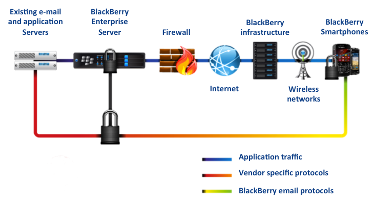

Many industries are looking at HTML5 as the platform of choice
Many also want to develop an application ecosystem
QNX Car
Working on QNX Car as a supported platform within Apache Cordova
BlackBerry Enterprise Service 10
A Single Platform for MDM
Next generation enterprise mobility solution
Application deployment across platforms
Simplified management
Single console
Mobile Device Management (MDM) of:
BlackBerry
iOS
Android
Has what Enterprise Apps need!
Behind the firewall connectivity
Push communications
Enterprise app management
BlackBerry Push
You can use the Push Service to develop a push-enabled application that runs on a BlackBerry device, and that receives push messages from a Push Initiator.
Push Initiator can deliver up to 8 KB of content (images, text, or audio) through the BlackBerry Enterprise Service 10.
Larger than 8KB – Poke and Pull
The content is available to all users on their devices without waiting for downloads.
BlackBerry Secure Infrastructure

Delivering simplicity and security
Secure connectivity to back-end services and corporate applications without the requirement and associated expenses of separate VPN service
Secure end-to-end encryption and only one outbound initiated connection through the firewall
FIPS 140-2 Validated, Government and Enterprise Trusted
BlackBerry World for Work
Work Space
IT Admins can deploy, manage and secure mandatory and recommended apps to users through the BlackBerry World for Work corporate app storefront
Personal Space
Users maintain freedom to install and use applications that meet their personal needs